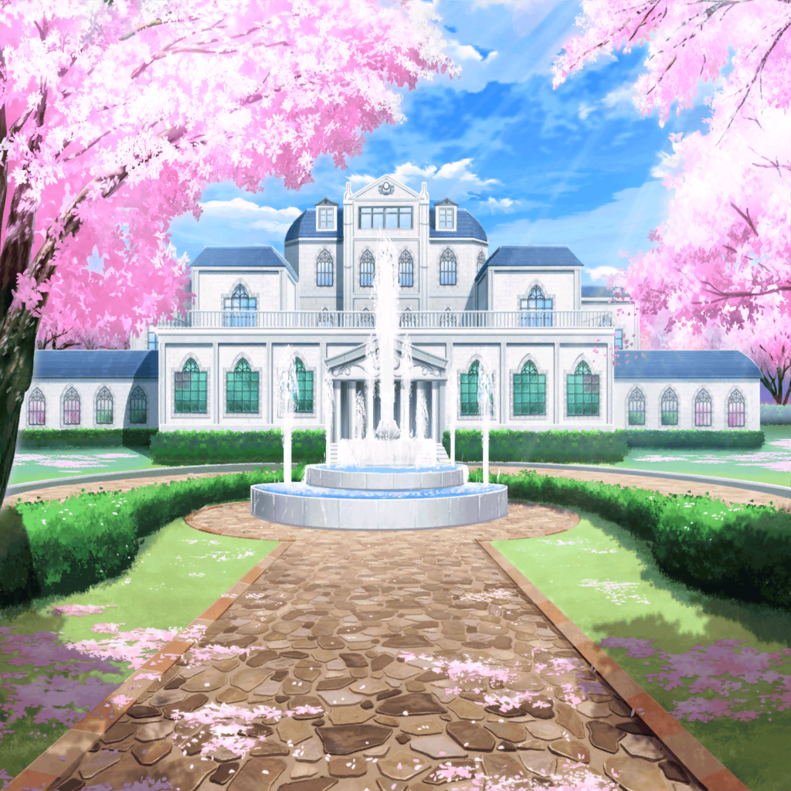

香澄
そういえばさ、みんなバンドやってるのは知ってるけど、
それ以外のことって、お互いあんまり知らないよね！
香澄
みんな、普段何してるの！？
香澄
ちなみに私は……
今はバンド一筋って感じかな！
こころ
とてもいいわ！ 一筋ってところが気に入ったわ！
香澄とは、今後とてもいい友達になれそうな気がするの！
だって、あたしも一筋だもの！
香澄
こころんは学校で有名人だよね？
好奇心が制服を着て、バク転してるような人だって！
こころ
あら、そうなの？ それははじめて知ったわね
りみ
こころちゃんは好奇心が旺盛で、いろんなことに
チャレンジするイメージがあったけど……
今は何に一筋なの？
こころ
確かにあたしはいろんなことをやるけど……
それは世界中の人を笑顔にするため！
笑顔一筋ってとこかしら！
こころ
世界中を笑顔にするために、
あたし達ハロー、ハッピーワールド！ は、
音楽をしたり歌を歌ったり、演奏したりしているのよ！
香澄
あ～、なるほど！
なら、私と一緒だね！
有咲
（音楽をしたり歌を歌ったり、演奏したりって……
ほとんど全部一緒だろうが！ つまりバンドだろ！？
ていうか、香澄も納得するなし！）
はぐみ
はぐみは、バンド以外だとソフトボールやってるよ！
昨日も試合だったんだー！
こころ
あ、そうだわ、はぐみ！
はぐみに知らせようと思っていたことがあったの！
はぐみ
え！？ なになに！？
こころ
ほら、この間、
ソフトボール専用のバッティングセンターがないことを
嘆いていたじゃない？
はぐみ
そうなんだよねー！ 野球のバッティングセンターは、
結構あるけど、ソフトボールのバッティングセンターって、
なかなかないんだもん！
こころ
それをあの人達に言ったら、早速作ってくれたわよ！
裏庭の方にあるから、あとで一緒に行きましょう！
有咲
（はぁっ！？ バッティングセンターを作った！？
なんだそれ！？ ありえねーだろ、普通！？）
はぐみ
こころん、ありがとー！
ホントこころんに相談してよかったよー！
やっぱり持つべきものは友達だね！？
有咲
（つか、なんで誰もつっこまねーの！？
沙綾くらいはつっこめよ……！？）
沙綾
あ、あはは……こころん家はなんだか規模が
普通じゃないね……
有咲
（つっこみをあきらめてひいてるし……！？）
香澄
それじゃあ次は……さーや！
沙綾
わ、私！？
こころ
さっきは笑顔パンをありがとうね！
あの笑顔パンは、あなたが作ったの？
有咲
（だから、そのネーミングやめろって……）
沙綾
その笑顔パンなんだけど……
有咲
（沙綾！ おまえが『笑顔パン』って言い出したら、
それもはやオフィシャルだぞ！？ いいのか、それで！？）
沙綾
実は……私が焼いたんだ
沙綾
いつもはお店の手伝いだけで、
パンを焼いたりはしないんだけど……
今日はお花見だから、頑張って焼いてみたんだよね
香澄
さーやはいつもやまぶきベーカリーのお手伝いを
してるんだよね！
こころ
そうなのね。お手伝いは、一体どんなことをしているのかしら？
沙綾
んー、店番したり、開店準備、閉店準備……。
パンを焼く釜の掃除をしたり……色々かなあ
美咲
聞いてるだけでヘトヘトになってきた。
山吹さんすごいね。あたしならそんなにいろいろできないよ
沙綾
あはは。ありがと。大変なことは多いけど、
案外なれると平気なもんだよ
こころ
いいえ、毎日手伝いをするなんてとってもすごいことよ！
もしよかったら、手伝いにあの人たちを派遣するわよ！
沙綾
え！ それはいいよ！
私はお店の手伝い、結構好きだから
こころ
そう？ もし困った時は言ってね！
沙綾
……う、うん。ありがとね
香澄
それじゃ次はりみりん、いってみよー！
りみ
……あ、わ、私は……こないだまで関西にいて……
そ、それで、こっちに来たばっかりだから……
こころ
関西にいたの！？ それじゃあ、引っ越して来たのね！？
すごいわ！ 引っ越しって、あたし一回してみたいの！
憧れるわよね、引っ越しって！ 羨ましいわ！
有咲
（この豪邸の方が憧れるだろが！）
美咲
…………
有咲
（……っ！？ ま、また見られてるっ！
お、おさまれ……私のこのツッコみたい衝動……）
たえ
私がバンド以外にやってることは……
有咲
（お、おたえ！？
おまえ、いつの間に戻ってきたんだ！）
たえ
……
たえ
……ギター
有咲
（なんだよ、おまえのその独特の間は！？
そんで結局、ギターって！
ギターはバンドの一環じゃないのか！？）
有咲
（いや、でも楽器は一人でもできるから一環とも
言えないか……って、なんでおたえの発言を
まじめに考えてるんだよ私は！？）
美咲
……あ、あたしはバンドをやってるって言うか、
とても複雑な状況なので、あまり多くを語りません。
そのこと以外は、至って普通ですから
香澄
あとは……イヴちゃんと有咲だね！
それじゃあ、イヴちゃん、おねがーい！
イヴ
えっと、私はこの間、日本に来たばかりで……
実はこういう日本のお花見に、すごく憧れてました！
有咲
（いや、この規模はめったにねーぞ……）
美咲
このお花見は、かなり特殊だけどね。
なので、これを日本のスタンダードなお花見と
思わないほうがいいよ
美咲
……市ヶ谷さんもそう思うよね？
有咲
えっ！？ あ、あはは〜。確かにこんなに広いお庭で
お花見するなんて、なかなかできることじゃないですよね〜！
す、すごいなあ〜！
有咲
（ヤバイ……ぜってーーー奥沢さんには私のこの
ツッコみたい衝動、見抜かれてる気がする……！）
イヴ
あとはブシドーですね！ 私、ブシドーに憧れています！
こころ
武士道？
そういえば、たしかウチに、なんだかって人が使ってた
なんたらって刀があった気がするわ！
有咲
（情報、少なっ！）
イヴ
！？
そ、それはなんという人で、なんという刀ですか！
こころ
なんだったかしら？
とにかく覚えにくい名前の人の、覚えにくい名前の刀よ！
イヴ
よかったら、その刀を見せてもらうことはできないでしょうか！？
こころ
名前を覚えにくい刀を見ても、あまりおもしろくないわ！
それより、あたしとチャンバラでもしない？
有咲
（な、なんなんだ……こいつらの会話は……？
全然噛み合ってない……。
こんなツッコミどころ満載の会話……なかなかねーだろ？）
香澄
それじゃあ、あと話をしてないのは……有咲！
最後は有咲の番だよっ！
有咲
え、ええと……私は……